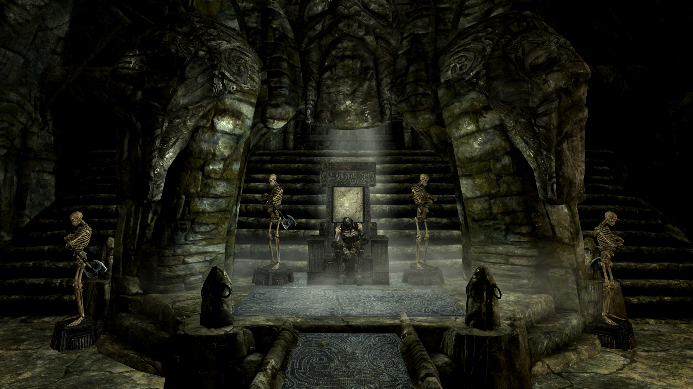
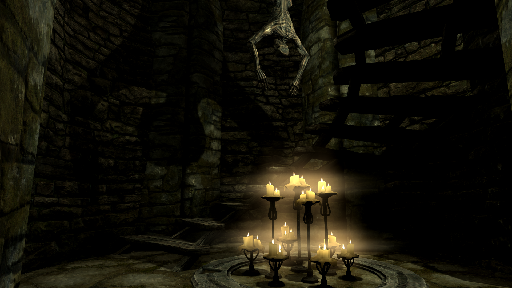

Frostfaarn
(Originally posted on 24.1.2019)

What
A mod for Elder Scrolls V: Skyrim
A draugr crypt located southwest of Dawnstar, west of Alftand.
Why
To give a boost and more role playing options for necromancers and conjurers. It contains two new Conjuration spells: Conjure Wraith and Conjure Faarn Thrall. Wraiths are fast and durable summons which cause their opponents (even other undead) to turn on each other. Faarn Thralls are weak and rather slow but are fully resistant to magic.
Design
The level is less linear and offers different paths to pass through the dungeon. Many of the rooms have two different entry points.
More emphasis on battles happening inside rooms. Enemies are located more often at the room ends to prevent player from retreating into tunnels to fight.
The level flow has two distinct upward phases with different type of enemies.
Balanced reactive and active challenges for the player.
The mod has a dark and a horror-like theme and is inspired by and uses lyrics from the following songs: Sentenced Farewell, Sentenced The Suicider and Sabaton Carolus Rex.
Loot
Conjure Wraith Spell
Adept level, default cost 197, Health 410, Stamina 300, Speed 1,3 * Normal, Attacks have frenzy effect on creatures below level 25.
Conjure Faarn Thrall
Novice level, default cost 99, Health 50, Stamina 50, Speed 0,9 * Normal, 100% Resist Magic
The following perk affect these summons: Novice Conjuration (Faarn Thrall), Adept Conjuration (Wraith), Summoner and Twin Souls
Available
Repo
Nexus (PC)
Bethesda (PC)
Bethesda (XBOX)
